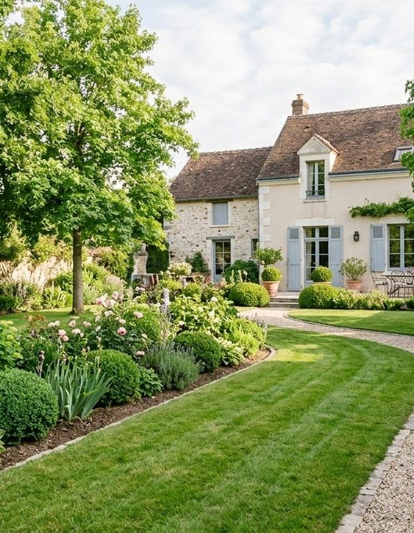
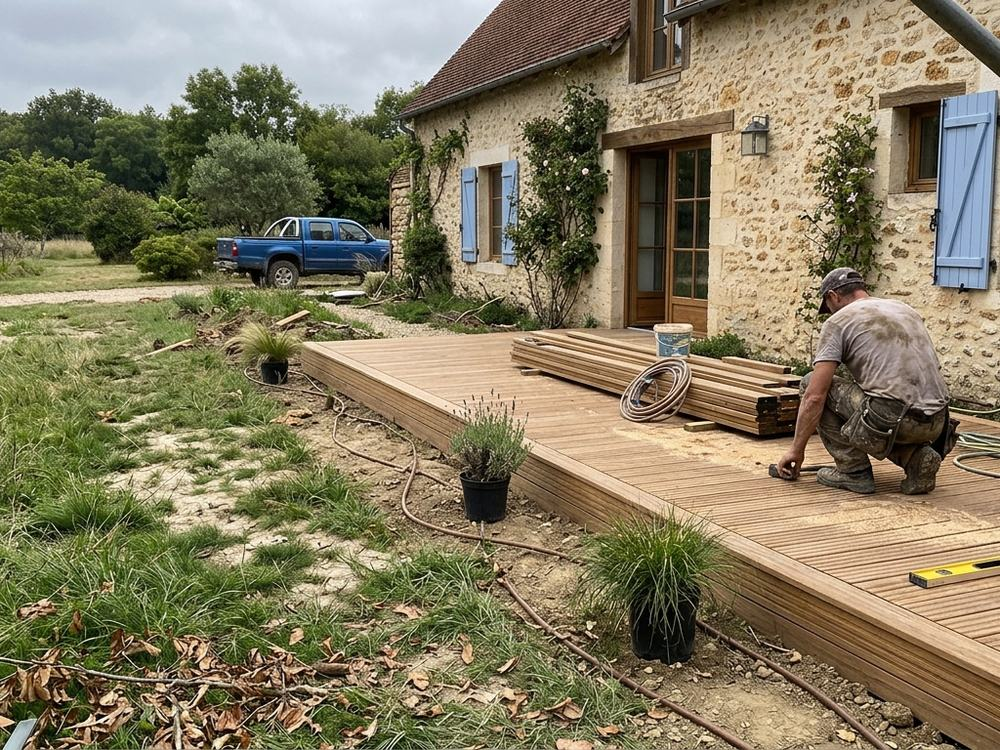
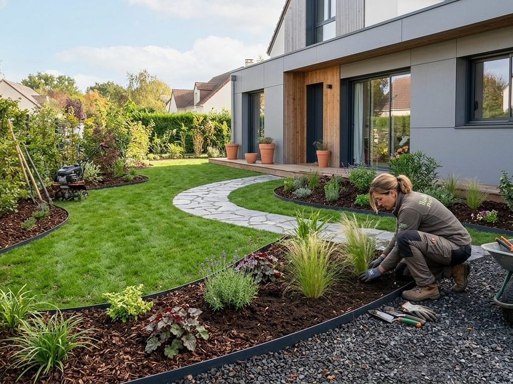
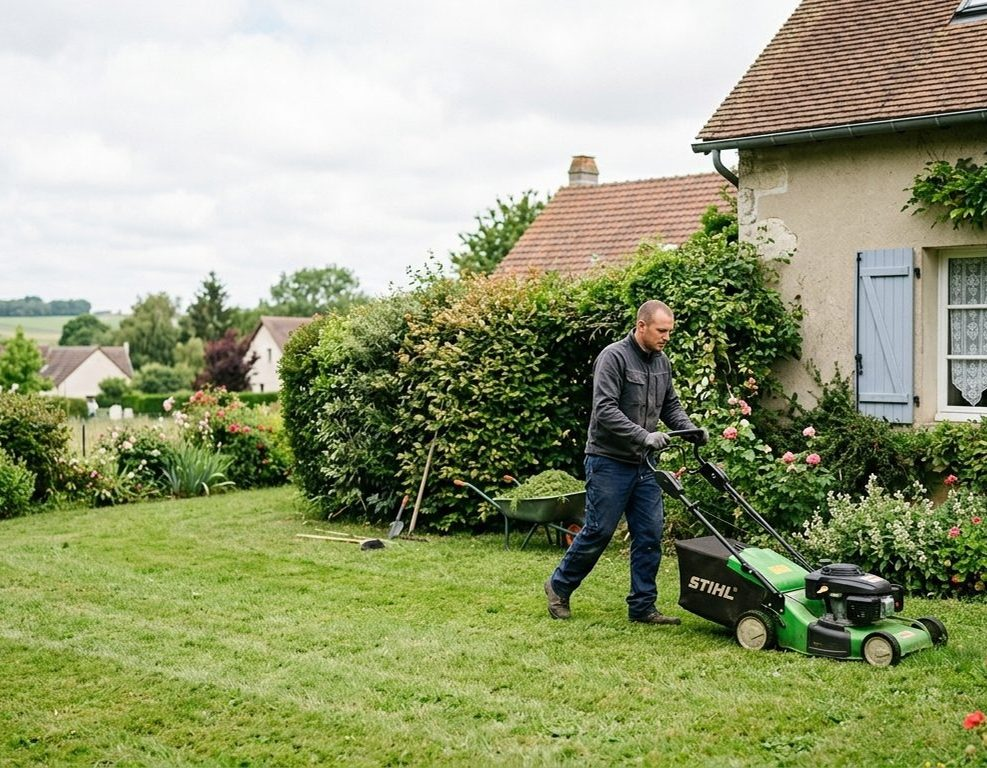
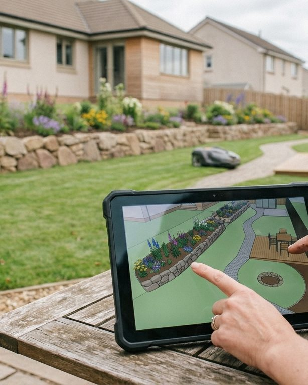
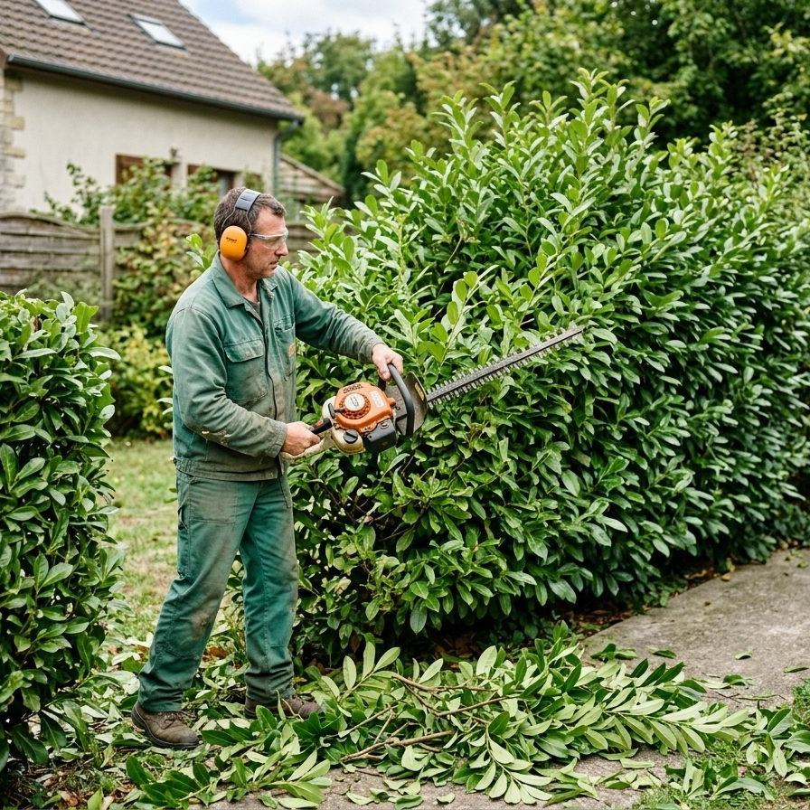

Paysagiste à Plaisir (78)
Votre jardin, pensé et aménagé avec soin
Izi Garden est une entreprise d'aménagement paysager installée à Plaisir, dans les Yvelines. Parlez-lui de votre projet pour obtenir un devis.



Nos prestations
Aménager, créer, entretenir
Des interventions à préciser ensemble selon votre terrain et votre demande.

Aménagement extérieur
Izi Garden vous accompagne pour aménager les extérieurs de votre propriété.
En savoir plus →
Création de jardin
Du projet à la réalisation, selon votre terrain et vos envies.
En savoir plus →
Entretien de jardin
Un suivi régulier pour garder votre jardin en bon état.
En savoir plus →
Espaces verts
Aménagement et suivi d'espaces verts selon votre situation.
En savoir plus →À propos
Une entreprise dirigée par Cedric Jadas
Izi Garden est une entreprise d'aménagement paysager basée à Plaisir, dans les Yvelines. Elle est dirigée par Cedric Jadas.
Prenez contact pour décrire votre projet et organiser un premier échange.



Contact
Un projet de jardin ? Parlons-en.
Appelez-nous pour décrire votre projet et demander un devis.